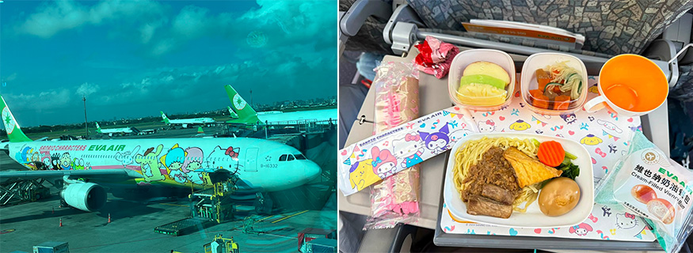
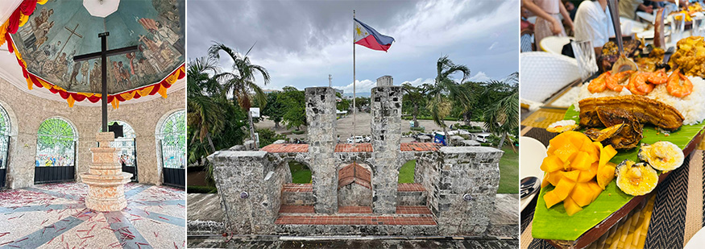
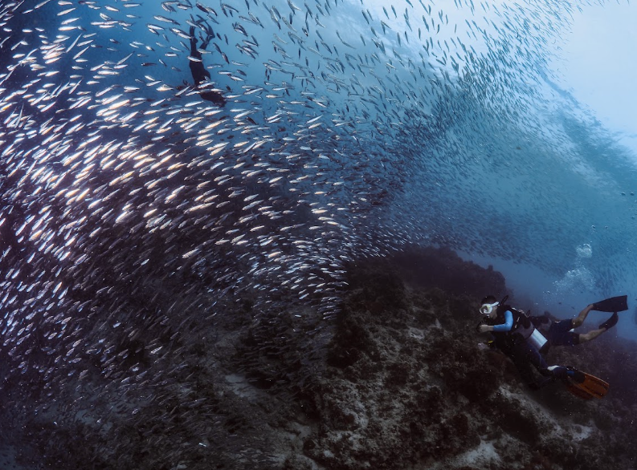
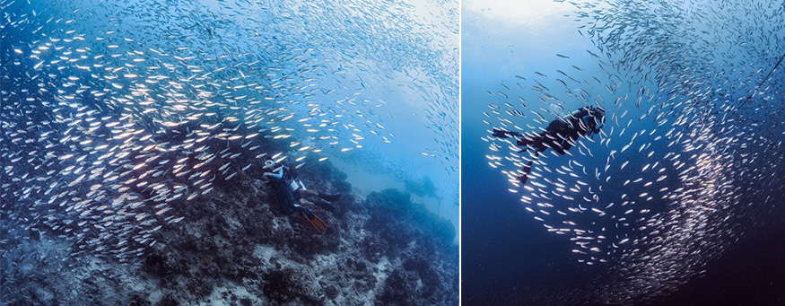
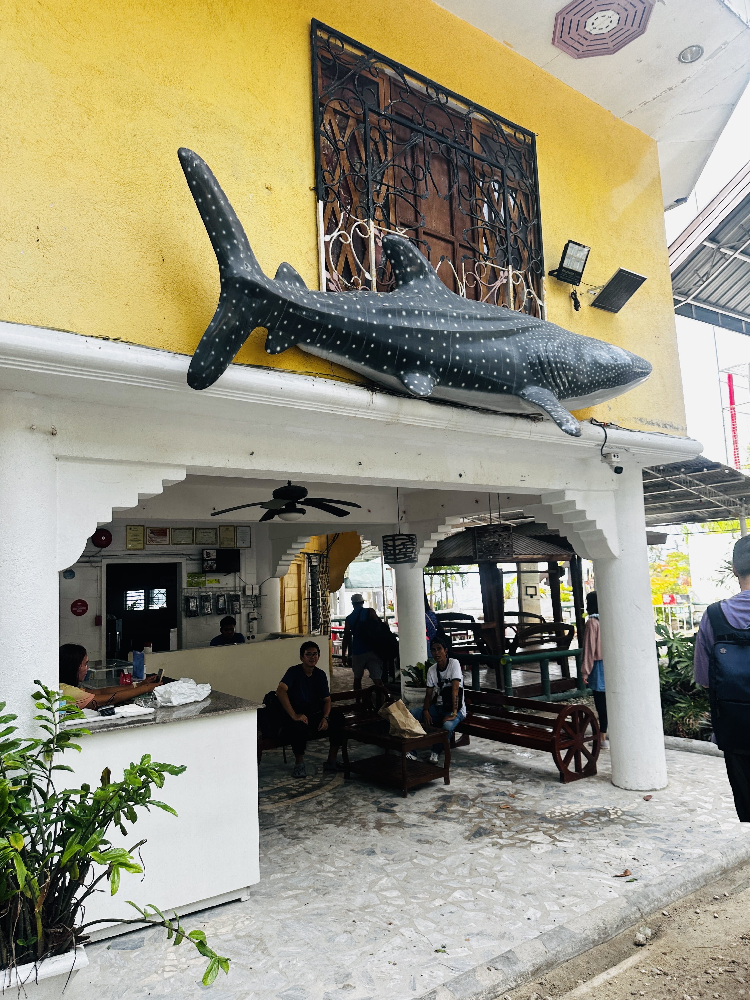
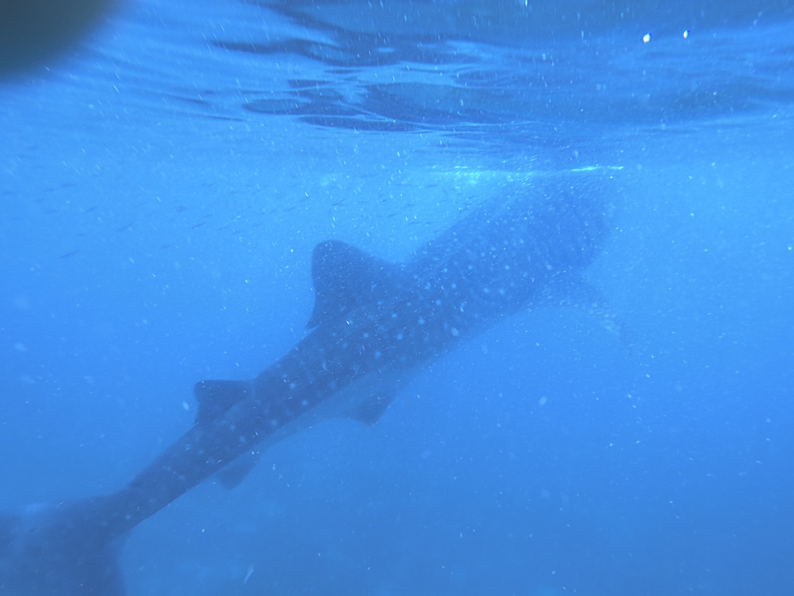
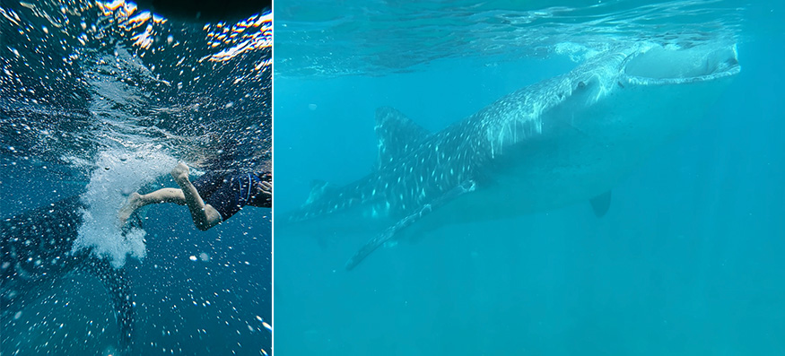
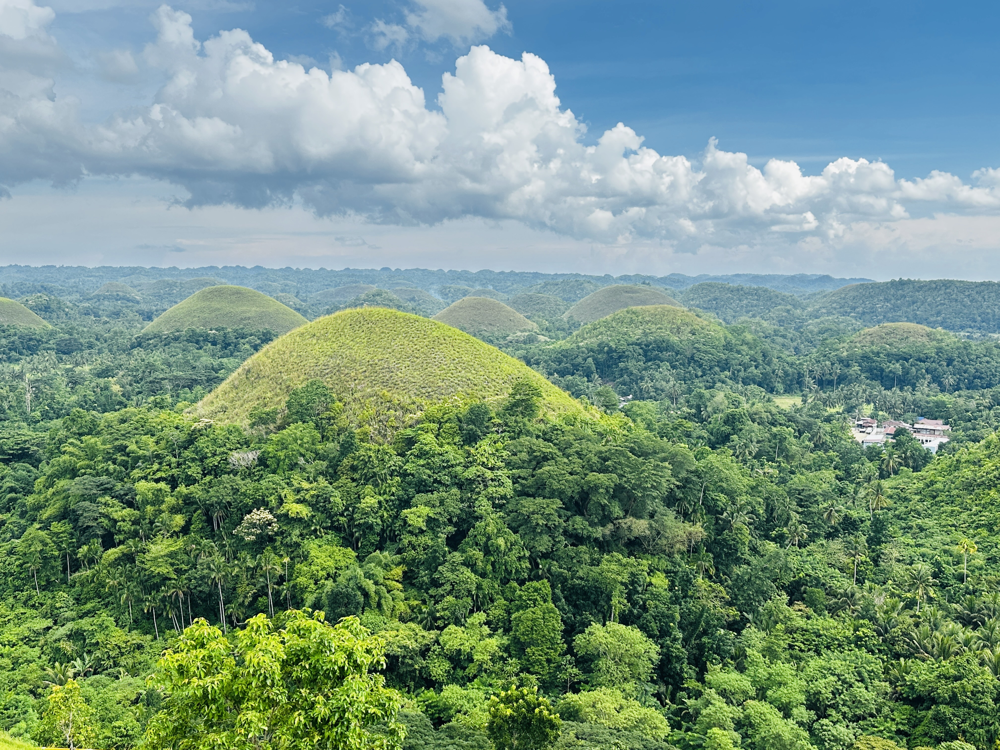
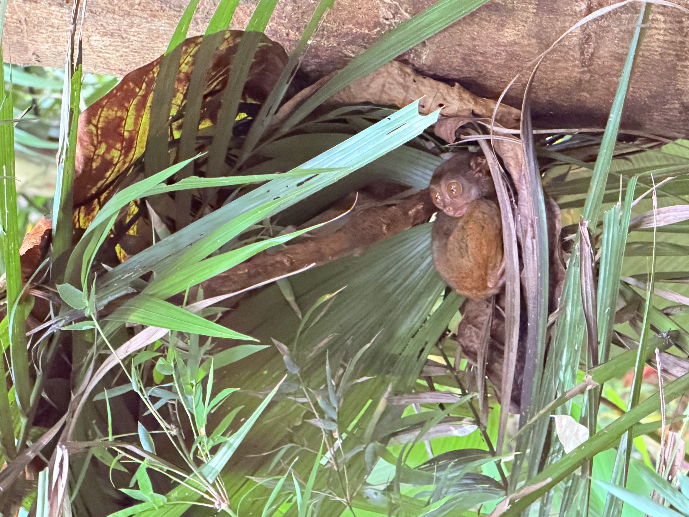
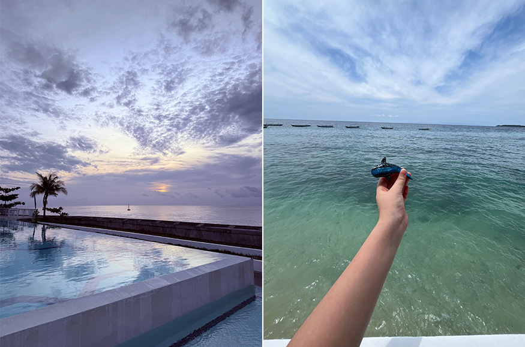

一直以來，我對「水」總是敬而遠之，我是把臉浸入水中都會緊張的「絕對陸棲生物」。今年暑假安排了家族旅遊，不知道哪來的勇氣，居然報名了宿霧 5 天 4 夜的海洋之旅。
 |
出發前心裡既期待又毛毛的，心想：「連游泳都不會的我，真的能看見傳說中的沙丁魚風暴與鯨鯊嗎？」
沒想到，這趟旅程不僅打破了我對大海的恐懼，更成為我們一家人這輩子最難忘的震撼記憶。
初抵宿霧，懷著不安與期待的序幕
搭乘飛機降落宿霧麥克坦國際機場，熱帶的迎賓海風撲面而來。因為選擇了跟團旅行，一出關就有親切的導遊與專車等候，這對帶著一家大小的我們來說省去不少舟車勞頓的壓力。
第一天行程相對輕鬆，導遊帶我們遊覽麥哲倫十字架與聖嬰大教堂，感受這座古城濃厚的歷史韻味。
然而，在享用美味的菲式烤豬肉（Lechon）時，我們四個人的心思早已飛到明後天的海邊。
 |
「導遊，我真的不會游泳，明天下水沒問題嗎？」我忍不住焦慮地問。
導遊笑著安慰我們：「放心！救生衣穿好，教練會一對一拉著你們，你們只需要負責睜開眼睛看奇蹟就好！」這句話，給了我們一顆超級定心丸。
墨寶（Moalboal）：服恐懼，陷入銀色風暴的震撼
第二天大早，我們前往宿霧西南部的潛水聖地—墨寶。今天的第一個重頭戲，就是近距離觀賞「沙丁魚風暴」。
穿上防寒衣、戴上面鏡與呼吸管，穿著救生衣站在船邊準備下水時，我的心臟都快跳出來了。「放鬆，慢慢呼吸，腳順著水流飄起來就好。」當地的潛水教練非常專業且有耐心，用一隻手牽著我們，引導大家把臉浸入海水中。
一開始，耳朵傳來咕嚕咕嚕的水聲，緊張感讓我們呼吸有些急促。但當我們適應了呼吸管，眼睛睜開的那一瞬間，所有的恐懼，被眼前極度不真實的景象一掃而空！
 |
數以百萬計的沙丁魚在我們腳下幾公尺處匯聚成一條巨大的銀色巨龍，隨著陽光的折射，閃爍著耀眼的金屬光澤。牠們忽而聚集成球，忽而如閃電般迅速變幻隊形，場面鋪天蓋地、氣勢磅礡！那一刻，我們完全忘記自己不會游泳，只覺得自己彷彿置身於宇宙的星河之中，深受
 |
這些照片，記錄下了我們這輩子最勇敢、也最震撼的一刻！畫面的背景是數百萬條沙丁魚交織構成的銀色風暴，宛如深海中的星雲翻湧；而畫面中的我們，身穿救生衣，眼神裡從一開始的生硬緊張，轉化為無比的驚嘆與敬畏。教練幫我們捕捉到了沙丁魚從我們身下游過的絕美角度，光線穿透水面打在魚群上，閃耀著夢幻的銀光。看著照片，才發現原來克服恐懼後的大海，竟是如此溫柔且壯麗。這不僅是一張照片，更是我勇敢跨出舒適圈的最佳證明！
歐斯陸（Oslob）：溫柔巨人的震撼，與鯨鯊的世紀相遇
如果說第二天的沙丁魚風暴是「壯麗」，那第三天在歐斯陸與鯨鯊的相遇，就是一場「心靈的洗禮」。
 |
為了搶在鯨鯊出沒的最佳時間，我們清晨就出發前往歐斯陸。到達海邊時，已經可以看到遠處海面上佇立著許多螃蟹船。
導遊在下水前再次強調了規範：
• 不能塗抹防曬乳，海洋友善類型的產品也是禁止塗抹，目的是保護鯨鯊。
• 不能主動觸碰鯨鯊必須保持安全距離。如果遊客主動觸碰鯨鯊，在當地是違法的，會面臨罰款甚至監禁處分。
當我們划著螃蟹船來到指定海域，船伕灑下小蝦，遠處水面上漸漸出現了巨大的黑影與巨大的背鰭。
「是鯨鯊！牠們來了！」全部的人都興奮地驚呼。
 |
有了昨天的經驗，這次我們毫不猶豫地順著船側梯子滑入海中。
當我把頭潛入水中，一頭長達七、八公尺的「溫柔巨人」鯨鯊，正優雅地從我們身旁不到幾公尺處緩緩游過。牠身上佈滿了像夜空繁星一樣美麗的斑點，巨大的嘴巴張開吞吐著海水中尋找食物，眼神無比溫和、從容。那一刻，時間彷彿凝結了。
近距離看著這頭龐然大物，沒有一絲一毫的害怕，心中只有滿滿的敬畏與感動。浮在水面上，手拉著手，眼眶甚至有點濕潤。這座大海是如此包容，而我們何其有幸，能以這麼近的距離，與地球上巨大的海洋生物 shared the same breath（共享同一口呼吸）。
 |
照片裡，巨大的鯨鯊帶著牠標誌性的星星斑紋，如同一座移動的海底山脈，在湛藍的海水裡優雅滑行；而我們一家人就在不遠處，浮在陽光灑落的水面上，與牠共游。時間完美定格了我們與這座「海洋溫柔巨人」同框的奇蹟瞬間。每當重新翻開這張照片，當時在水中親眼目睹鯨鯊時那種直擊心靈的悸動、對生命的敬畏，以及全家人聚精會神共享這一刻的感動，依然歷歷在目、熱淚盈眶。
薄荷島（Bohol）：陸上奇觀與溫馨時光
體驗完兩天極致的海洋震撼後，第四天我們搭乘快艇前往薄荷島，展開一場充滿童趣與放鬆的陸上探險。我們造訪了極具特色的巧克力山（Chocolate Hills），數百座圓滾滾的小山丘連綿不絕，可愛得像插在大地上的松露巧克力。
 |
接著看了全世界體型最小的猴類之一，眼鏡猴（Tarsier），牠們拳頭般的大小與水汪汪的大眼睛，瞬間融化了所有人的心。
 |
中午我們在羅博河（Loboc River）的竹筏船上享用 buffet 午餐，船沿著熱帶雨林河流緩緩前行，兩岸有當地原住民的歌舞表演。經過了前兩天的「水下挑戰」，這一天一家人坐在船上吹著涼風、聊著前幾天看到鯨鯊與沙丁魚的趣事，氣氛無比融洽。
完美句點與心靈的滿載而歸
最後一天，我們在飯店享用了悠閒的早餐，在泳池邊散步聊著潛水樂趣與浮潛感動，接著前往紀念品店挑選了芒果乾、鯨鯊形狀的小木雕與鑰匙圈，準備把宿霧的熱情打包帶回家。
 |
搭上回台灣的班機，窗外的宿霧漸漸變小，但我們心中的感動卻無比巨大。
這趟宿霧之旅，對我這種「不會游泳」的人來說，原本是一場未知的大膽冒險。但正因為勇敢選擇了跨出那一步，才能在墨寶的深海裡，看見數百萬條沙丁魚交織出的璀璨星河；才能在歐斯陸的大海中，感受到鯨鯊從身旁游過的溫柔震懾。
從最初不敢下水的恐懼，到最後在大海裡放開雙手擁抱自然，這一段心路歷程，是我送給自己，也是送給孩子們最棒的禮物。
宿霧的大海用它的寬廣，教會了我們什麼是勇敢。
小提醒 : 強烈建議要租借 GoPro 或請教練幫忙拍照，才能記錄下沙丁魚風暴與鯨鯊同框的感動瞬間喔！因為有了這些珍貴的照片與回憶，會是我們一輩子反覆品味的寶藏。